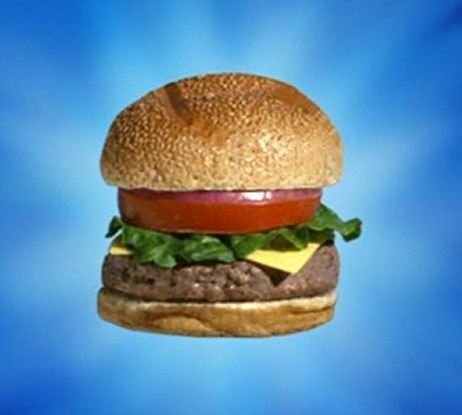

Home

The Majestic Krabby Patty
Here’s a fun, fully edible “Krabby Patty” recipe inspired by SpongeBob SquarePants — complete with a “secret formula” sauce
Ingredients
For the patty
- 1 lb ground beef
- Salt & pepper
- 1 tsp onion powder
- 1 tbsp crab juice
- 1 coral stalk
For the secret formula
- A crisp $1 bill
- Squid Ink
- landlubber butter
- garlic mayonnaise
Toppings
- Tomato slice
- 3 Pickles
- Sesame seed bun
- Slice of cheese
Step by Step:
- Mix the beef and the stuff together, squirt in crab juice
- Form the congealed mass of meat into a patty shape
- Cook on the grill for 4 minutes until golden brown
- Create sauce and keep on low heat on the hob
- Toast buns
- Put patty in bun
- Pour sauce over patty
- Lay on toppings (any order you choose)
- Kiss it